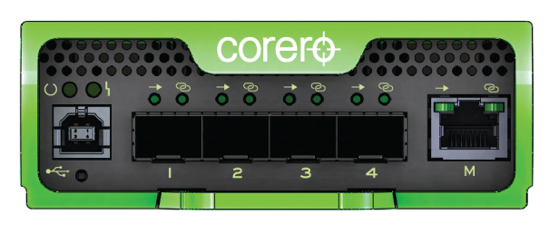

Show search and navigation tools
The Corero SmartWall Network Threat Defense Appliance is a network security appliance that protects network infrastructure against distributed denial of service (DDoS) attacks. It is the foundation of Corero's First Line of Defense solution.
The SmartWall Network Threat Defense Appliance is available as a purpose-built hardware unit dedicated to running Corero's SmartWall Network Threat Defense Appliance software.
The SmartWall Network Threat Defense Appliance can stand alone as an individual appliance, or it can be combined with one or more other SmartWall Network Threat Defense Appliances in a high-availability configuration, or in a networked series of SmartWall Network Threat Defense Appliances, each of which inspects and handles different aspects of the traffic entering your network.

The SmartWall Network Threat Defense Appliance provides the following protection: